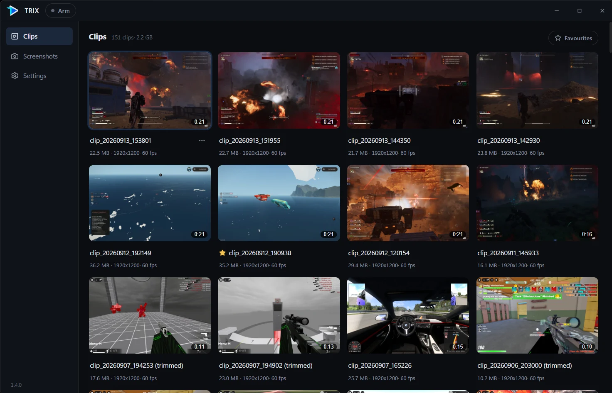

TRIX
Clip it after it happens.
Trix keeps the last 15 seconds of your screen. Press Alt + F10 and they're a clip. Your GPU does the recording, so your game keeps its frames.
Windows 10 & 11 · 64-bit · Free and open source
